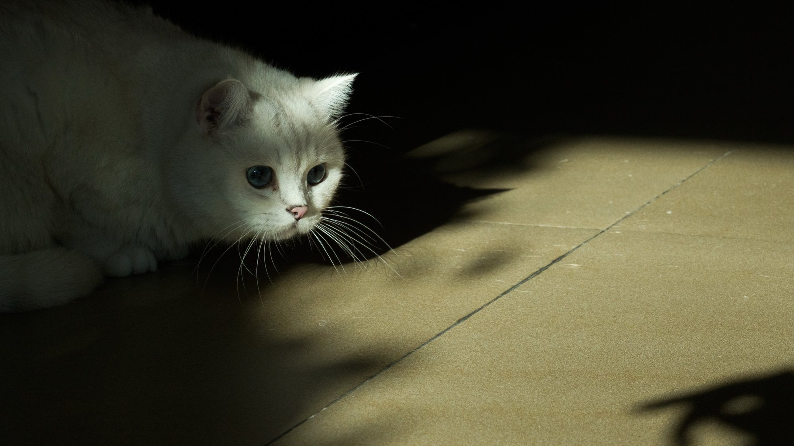
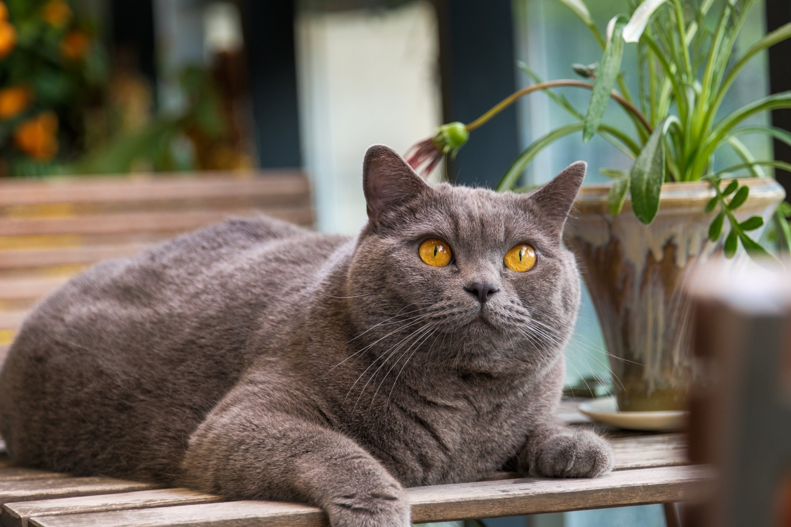
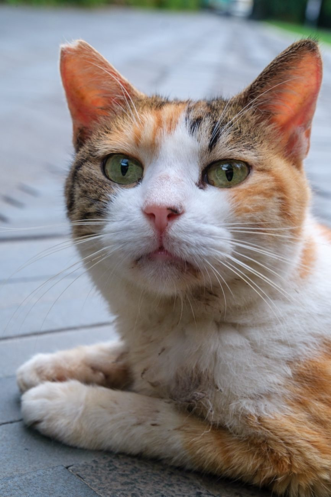

Selected workAnimal portraits
I photograph animals, mostly cats: the ones I live with, the ones friends trust me with, and the strays who let me sit nearby for a while. I work at their eye level and I wait, for a slant of light through a window, for the moment a cat stops performing and simply looks back.
Over time the light has become the subject as much as the animal. The pictures here move from that quiet, single-light work, to portraits, to the hands and companions that share an animal’s life, and out to the streets.
In the light
A single slant of light, and everything else let go dark.




Portraits
Faces, at the animal's own eye level.


Together
Hands, siblings, and the quiet trust between them.




Out in the world
Strays and wanderers, on their own terms.


